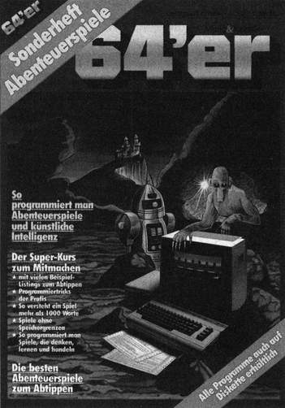

Warum Adventure?

Wenn des Nachts jemand angespannt über einer Tastatur und einem Monitor hängt, dann ist meist ein Adventure im Spiel. Ein Adventure, ein Abenteuerspiel, ist eine Beschäftigung mit Computern, wie es keine andere gibt. Man kann mit einem Adventure in eine andere Haut schlüpfen, zum Zauberer, Weltraumpiloten, Detektiv, Barbaren oder Geheimagenten werden. Der Spieler trifft oft lebenswichtige Entscheidungen und steigert sich mit seiner Phantasie derart in die Story rein, daß er mit dem Helden zusammen die wildesten Abenteuer erlebt.
Adventures sind wie Bücher, aber ganz spezielle Bücher, denn hier kann man bestimmen, was als nächstes passiert. Adventures sind für viele wohl die schönste Art von Computerspielen.
Natürlich wollen viele Leute Adventures nicht nur spielen. Irgendwann taucht in einem der Gedankenblitz auf, selber ein Abenteuerspiel zu schreiben. Vielleicht ist es eine neue Idee, eine, die bisher in keinem Adventure verwirklicht wurde. Sie fangen an, Pläne zu machen, Skizzen anzufertigen, Grafiken auszutüfteln. Doch spätestens, wenn man sich vor den Computer setzt, kommt man ins Grübeln. Das WAS ist nicht so schwer, doch das WIE stellt einem vor Probleme. Deshalb entstand dieses Sonderheft. Michael Nickles, der einen großen Schatz an Erfahrungen in der Programmierung von Adventures besitzt, gibt sein Wissen an Sie weiter.
Michael hat es sich in diesem Heft zur Aufgabe gemacht, das Abenteuer der Adventure-Programmierung zu untersuchen, zu entschlüsseln und verständlich zu machen. Begonnen damit hat er schon vor Jahren. Die Grundbegriffe der Adventuretechnik erklärte er im 64'er-Sonderheft 2/85.
Dieses neue Heft ist allerdings keine reine Fortsetzung, denn es nutzt auch denen, die den ersten Kurs noch nicht kennen. Wer allerdings Probleme mit diesem Kurs hat, sollte vielleicht das Sonderheft 2/86 noch einmal zur Hand nehmen.
Wer nicht selber programmieren, sondern nur spielen möchte, der bekommt mit diesem Heft die besten Adventures zum Abtippen. In einem langdauernden Prozeß haben wir für Sie die interessantesten Spiele herausgesucht, mit denen Sie voll auf Ihre Kosten kommen werden. Wir hoffen, daß Sie mit dem großen Kurs und den ausgezeichneten Programmen auch auf den Geschmack gekommen sind und jetzt das Rüstzeug besitzen, um ebenfalls gleich gute oder sogar noch bessere Adventures zu schreiben. Lassen Sie es uns ruhig wissen und scheuen Sie sich nicht, sie uns zuzuschicken. Wer wagt, gewinnt.
(Georg Klinge/Boris Schneider)